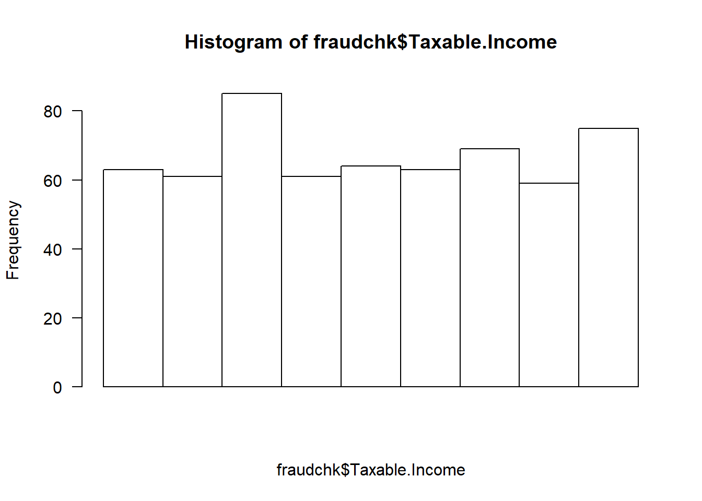
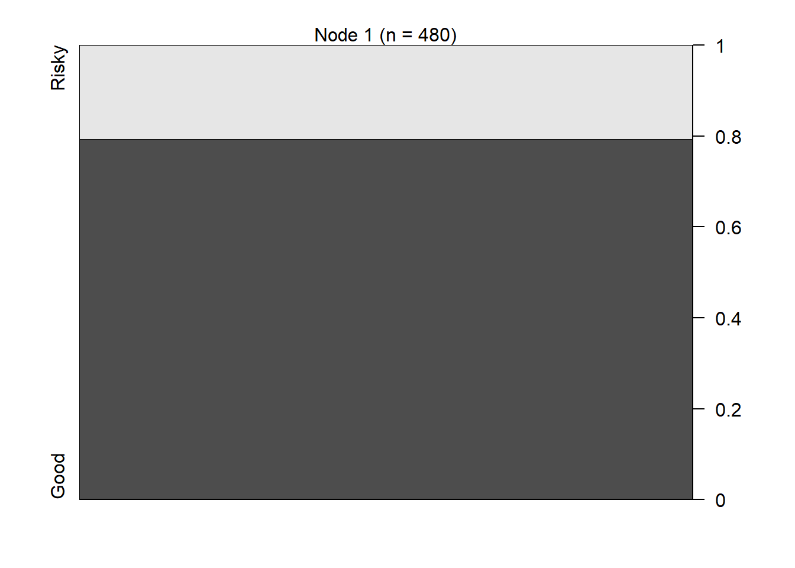
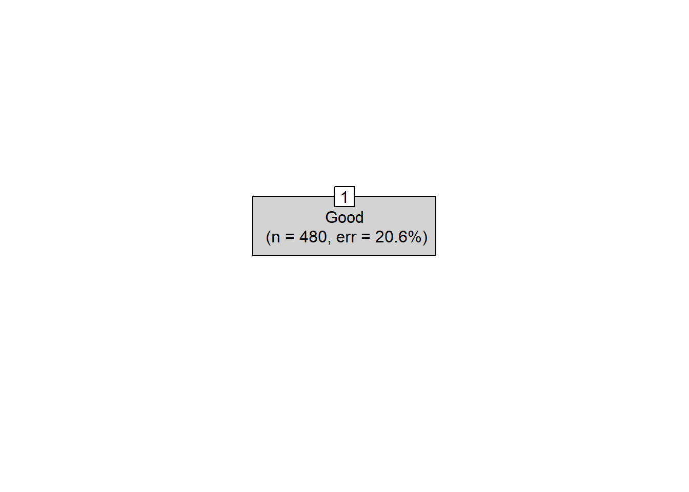
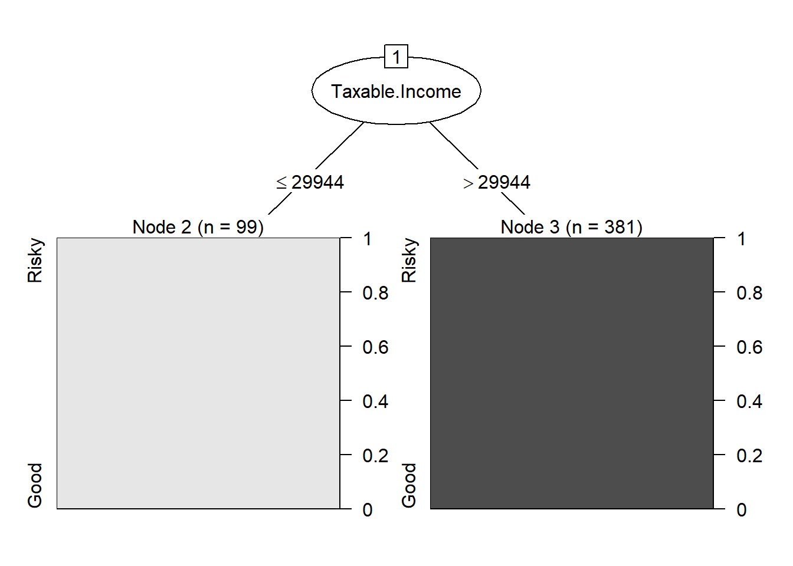

library(caTools)
fraudchk <- read.csv("C:/Users/Alex/Downloads/Data/Fraud_check.csv")
dplyr::glimpse(fraudchk) # Checking the structure of data using glimpse function in dplyr## Observations: 600
## Variables: 6
## $ Undergrad <fct> NO, YES, NO, YES, NO, NO, NO, YES, NO, YES, NO, NO, N…
## $ Marital.Status <fct> Single, Divorced, Married, Single, Married, Divorced,…
## $ Taxable.Income <int> 68833, 33700, 36925, 50190, 81002, 33329, 83357, 6277…
## $ City.Population <int> 50047, 134075, 160205, 193264, 27533, 116382, 80890, …
## $ Work.Experience <int> 10, 18, 30, 15, 28, 0, 8, 3, 12, 4, 19, 6, 14, 16, 13…
## $ Urban <fct> YES, YES, YES, YES, NO, NO, YES, YES, YES, YES, YES, …summary(fraudchk) # Summary## Undergrad Marital.Status Taxable.Income City.Population Work.Experience
## NO :288 Divorced:189 Min. :10003 Min. : 25779 Min. : 0.00
## YES:312 Married :194 1st Qu.:32872 1st Qu.: 66967 1st Qu.: 8.00
## Single :217 Median :55075 Median :106494 Median :15.00
## Mean :55208 Mean :108747 Mean :15.56
## 3rd Qu.:78612 3rd Qu.:150114 3rd Qu.:24.00
## Max. :99619 Max. :199778 Max. :30.00
## Urban
## NO :298
## YES:302
##
##
##
## hist(fraudchk$Taxable.Income, las=1, xaxt='n') # Histogram of the variable: Taxable Income
We’ll convert the variable Taxable.Income into categorical variable as Risky for values that are less than 30000 and Good otherwise
# Converting Taxable.Income to Risky and Good
fraudchk$RiskyGood <- cut(fraudchk$Taxable.Income,
breaks = c(0,30000,Inf),
labels = c("Risky","Good"))
head(fraudchk, n=20)dplyr::glimpse(fraudchk)## Observations: 600
## Variables: 7
## $ Undergrad <fct> NO, YES, NO, YES, NO, NO, NO, YES, NO, YES, NO, NO, N…
## $ Marital.Status <fct> Single, Divorced, Married, Single, Married, Divorced,…
## $ Taxable.Income <int> 68833, 33700, 36925, 50190, 81002, 33329, 83357, 6277…
## $ City.Population <int> 50047, 134075, 160205, 193264, 27533, 116382, 80890, …
## $ Work.Experience <int> 10, 18, 30, 15, 28, 0, 8, 3, 12, 4, 19, 6, 14, 16, 13…
## $ Urban <fct> YES, YES, YES, YES, NO, NO, YES, YES, YES, YES, YES, …
## $ RiskyGood <fct> Good, Good, Good, Good, Good, Good, Good, Good, Good,…# removing Taxable.Income
fchk <- fraudchk[c(7,1:2,4:6)]
prop.table(table(fchk$RiskyGood))*100 # We don't have proper balance of data##
## Risky Good
## 20.66667 79.33333head(fchk)Splitting data fchk into train_set and test_set
set.seed(789)
split = sample.split(fchk$RiskyGood, SplitRatio = 0.80)
train_set = subset(fchk, split == TRUE) # training data
test_set = subset(fchk, split == FALSE) # test dataWe’ll create a classifier using C5.0 algorithm
library(C50)
classifier <- C5.0(x = train_set[-1],
y = train_set$RiskyGood)
classifier # Tree size shows 1 ##
## Call:
## C5.0.default(x = train_set[-1], y = train_set$RiskyGood)
##
## Classification Tree
## Number of samples: 480
## Number of predictors: 5
##
## Tree size: 1
##
## Non-standard options: attempt to group attributesplot(classifier)
plot(classifier, type="simple")
summary(classifier)##
## Call:
## C5.0.default(x = train_set[-1], y = train_set$RiskyGood)
##
##
## C5.0 [Release 2.07 GPL Edition] Fri Feb 14 10:25:30 2020
## -------------------------------
##
## Class specified by attribute `outcome'
##
## Read 480 cases (6 attributes) from undefined.data
##
## Decision tree:
## Good (480/99)
##
##
## Evaluation on training data (480 cases):
##
## Decision Tree
## ----------------
## Size Errors
##
## 1 99(20.6%) <<
##
##
## (a) (b) <-classified as
## ---- ----
## 99 (a): class Risky
## 381 (b): class Good
##
##
## Time: 0.0 secs#C5imp(classifier)This means that our classifier is not able to classify properly using any of the available variables.
Lets try creating another classifier that uses the variable Taxable.Income
fchk1 <- fraudchk[c(7,1:6)]
set.seed(789)
split = sample.split(fchk1$RiskyGood, SplitRatio = 0.80)
train_set = subset(fchk1, split == TRUE) # training data
test_set = subset(fchk1, split == FALSE) # test data
classifier <- C5.0(x = train_set[-1],
y = train_set$RiskyGood)
classifier # Tree size shows 2##
## Call:
## C5.0.default(x = train_set[-1], y = train_set$RiskyGood)
##
## Classification Tree
## Number of samples: 480
## Number of predictors: 6
##
## Tree size: 2
##
## Non-standard options: attempt to group attributessummary(classifier) # To see more details on the Classifier##
## Call:
## C5.0.default(x = train_set[-1], y = train_set$RiskyGood)
##
##
## C5.0 [Release 2.07 GPL Edition] Fri Feb 14 10:25:30 2020
## -------------------------------
##
## Class specified by attribute `outcome'
##
## Read 480 cases (7 attributes) from undefined.data
##
## Decision tree:
##
## Taxable.Income <= 29944: Risky (99)
## Taxable.Income > 29944: Good (381)
##
##
## Evaluation on training data (480 cases):
##
## Decision Tree
## ----------------
## Size Errors
##
## 2 0( 0.0%) <<
##
##
## (a) (b) <-classified as
## ---- ----
## 99 (a): class Risky
## 381 (b): class Good
##
##
## Attribute usage:
##
## 100.00% Taxable.Income
##
##
## Time: 0.0 secsplot(classifier) # Decision Tree based on the Classifier
C5imp(classifier) # Usage of each variable by the ClassifierThis means that the only variable that is used by the classifier is Taxable.Income
Rest of the variables do not contribute anything in the decision making.
Other than the variable Taxable.Income based on which we are supposed to create a decision tree, we cannot create a good Decision Tree Classifier due to insufficient variables that can contribute to the decision making of the classifier.